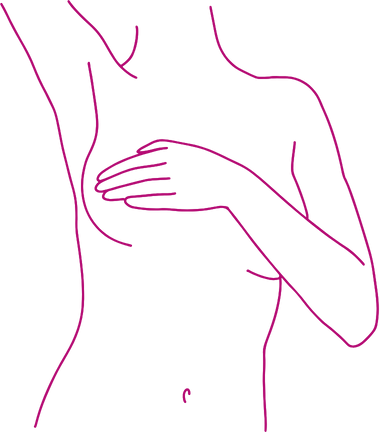

Passo 1 : Escolha um local limpo e tranquilo
Fique em um ambiente arejado e higienizado, evitando distrações.

Passo 2: Realize a massagem no seio
Massageie suavemente o seio antes de iniciar a coleta para estimular o fluxo de leite.
Passo 3: Coleta do leite:
CColete o leite manualmente ou com uma bomba de extração, diretamente no frasco esterilizado.